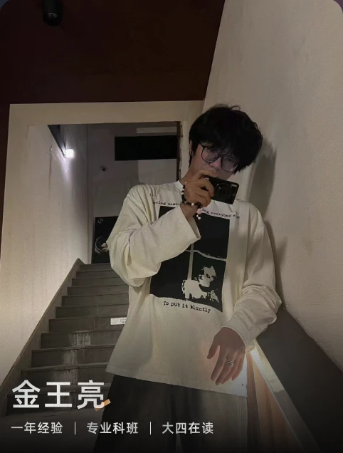

Design PORTFOLIO
Pay attention to what users do
not what they say.
JIN WANGLIANG / UI · UX DESIGNER
PERSONAL PORTFOLIO / 2026向下探索
PERSONAL PORTFOLIO / 2026向下探索

DESIGNER. EXPLORER. HUMAN.A LITTLE ABOUT ME / 关于我
你好，我是
金王亮。
关注界面，也关注界面背后的人。
专注 UI / UX 产品设计，参与过 AI Agent 产品从 0 到 1 的体验设计，以及 C / B 端项目迭代。喜欢把复杂的问题拆解清楚，再用细腻的视觉与自然的交互，连接用户与产品。
在上海工程技术大学学习视觉传达设计，持续探索 AIGC、智能交互与情感化设计。
FOCUS
产品体验 / 视觉设计 / AI
TOOLKIT
Figma · ProtoPie · Photoshop
Illustrator · After Effects · C4D
SELECTED WORK / 精选作品
从理解一个人，
到设计一种体验。
LET'S MAKE SOMETHING MEANINGFUL